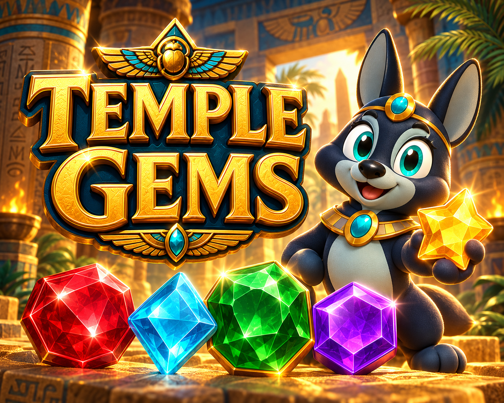

Disponible
DisponiblePlataformas · Aventura
Charlie the Frog Adventures
Explorá cuatro biomas, dominá el doble salto y acompañá a Charlie en su aventura gratuita de plataformas.

Puzles · Match-3
DisponibleDespertá la magia del templo.
Combiná gemas del antiguo Egipto, encadená cascadas y ayudá al guardián a recuperar el Corazón de Ra.
Tu próxima partida
Intercambiá gemas vecinas para formar combinaciones de tres, activar cascadas y crear gemas especiales. Cada templo plantea sus propios objetivos y un número limitado de movimientos.
La ficha de itch.io incluye la versión de navegador y el avance cinematográfico disponible para descargar.
Dentro del juego
Seguimos creando
DisponiblePlataformas · Aventura
Explorá cuatro biomas, dominá el doble salto y acompañá a Charlie en su aventura gratuita de plataformas.
 Pre-release
Pre-releaseCarreras · Arcade
Manejá con una torre de carga sobre el techo, encadená derrapes y llevá tu cargamento hasta la meta.
 Disponible
DisponibleArcade · Un toque
Mantené, soltá y saltá. Ayudá a Pip a cruzar las islas flotantes y reconstruir el Gran Arcoíris.